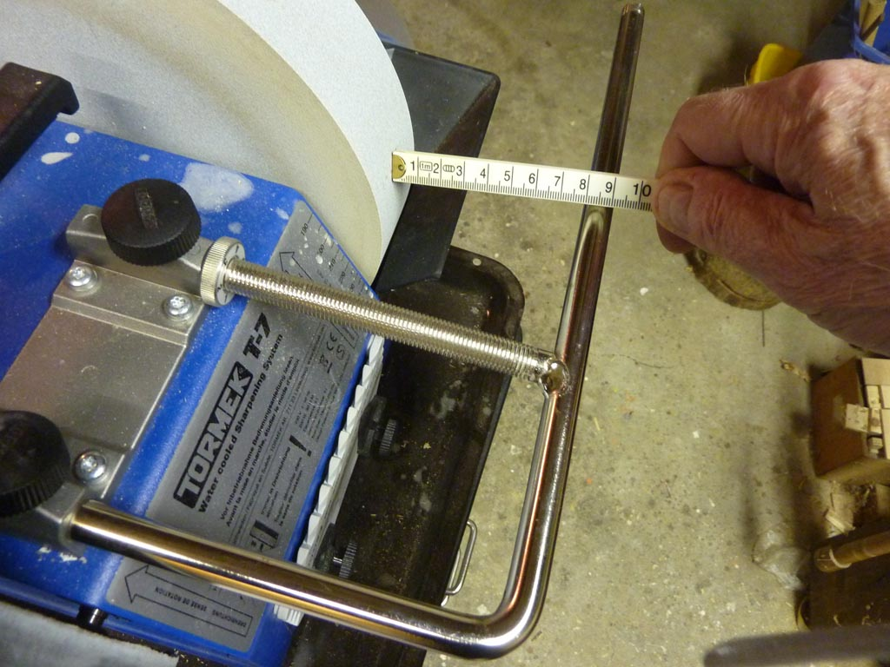

Ton Nillesen (also known as "the Dutchman") put together a guide for setting grinding angles on knives when using the knife jigs. This approach opened up a lot of other work, so it is very critical to understand if you are looking to set angles very accurately. Some are using this approach to set the angle to less than 1° of accuracy.
His method is a very simple way for setting the machine up to grind specific angle you desire. His documents also provide the mathematical background from which the necessary formula is derived. With that formula, tables are generated, to setup the jigs based on the grind wheel size, allowing you adjust at the wheel size diminishes with use.
It is published in these in A-4 & A5-format. Whilst they say they are for the T-7, these equally apply to the T-2000, T-3, T-4, and T-8:
|
A-4 Format
|
A-5 Format
|
|---|---|
| Grinding angle adjustment Booklet.pdf | Grinding angle adjustment A5 serial.pdf |
| More math for the Tormek grinder Booklet.pdf | More math for the Tormek grinder A5 serial.pdf |
Ton also published his spreadsheets, which can be opened in Excel or OpenOffice: